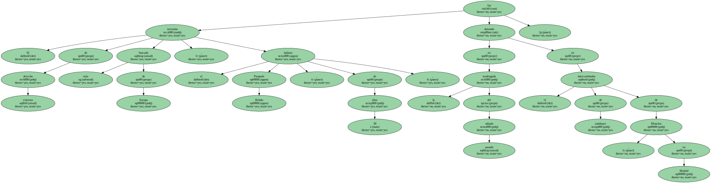
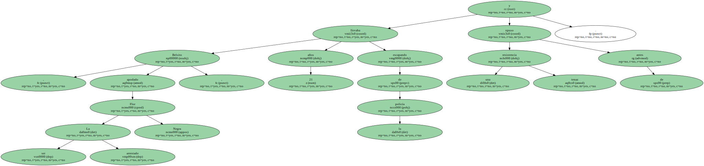
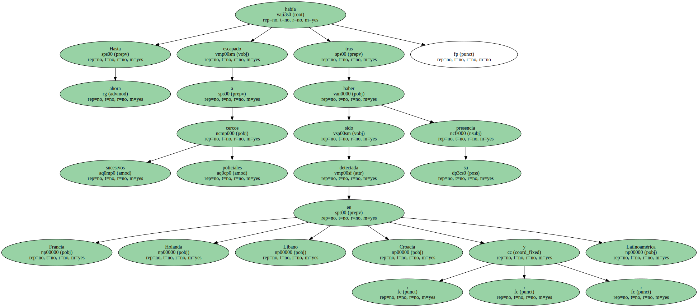
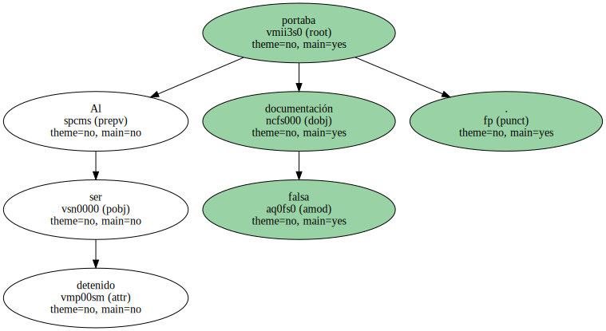
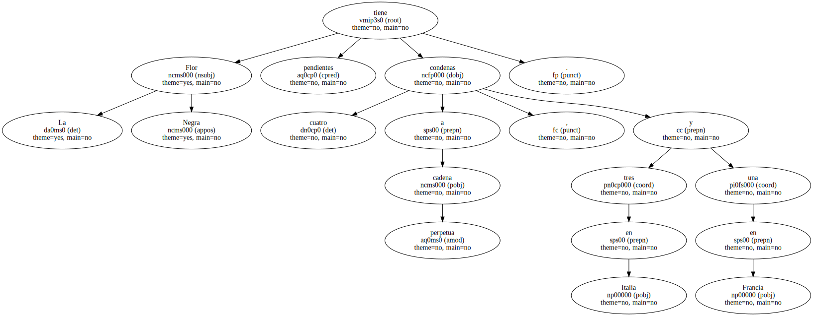
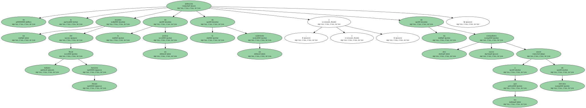
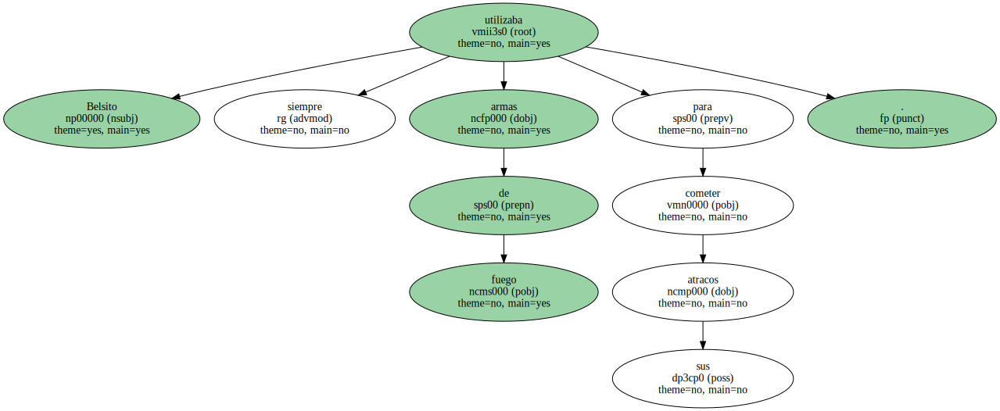
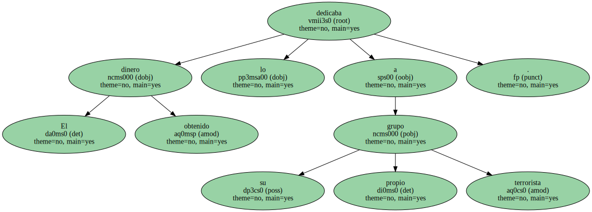
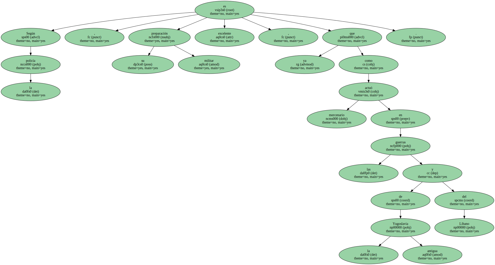
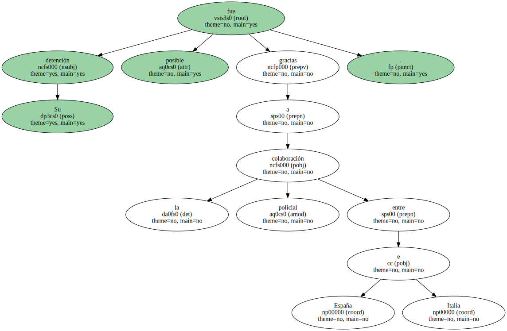

El terrorista de extrema derecha más buscado de Europa , el italiano Pasquale Belsito , de 39 años , fue detenido en la madrugada del pasado sábado en el intercambiador de autobuses de Moncloa , en Madrid.
Belsito , apodado La Flor Negra , llevaba 21 años escapando de la policía y opuso una tenaz resistencia antes de ser arrestado.
Adscrito al grupo ultra italiano Núcleos Armados Revolucionarios ( NAR ) y considerado como un terrorista de " extrema peligrosidad " , según el Ministerio del Interior , sobre Belsito pesan dos órdenes internacionales de búsqueda y captura , una italiana y otra francesa.

Hasta ahora había escapado a sucesivos cercos policiales tras haber sido detectada su presencia en Francia , Holanda , Líbano , Croacia y Latinoamérica.
Al ser detenido portaba documentación falsa.
La Flor Negra tiene pendientes cuatro condenas a cadena perpetua , tres en Italia y una en Francia.
Se le atribuyen las muertes del fiscal italiano Antonio Amato , la de un policía y la de un carabinero , y las de dos compañeros suyos a los que acusó de chivatos.
Belsito siempre utilizaba armas de fuego para cometer sus atracos.
El dinero obtenido lo dedicaba a su propio grupo terrorista.
Según la policía , su preparación militar es excelente , ya que actuó como mercenario en las guerras de la antigua Yugoslavia y del Líbano.
Su detención fue posible gracias a la colaboración policial entre España e Italia.
